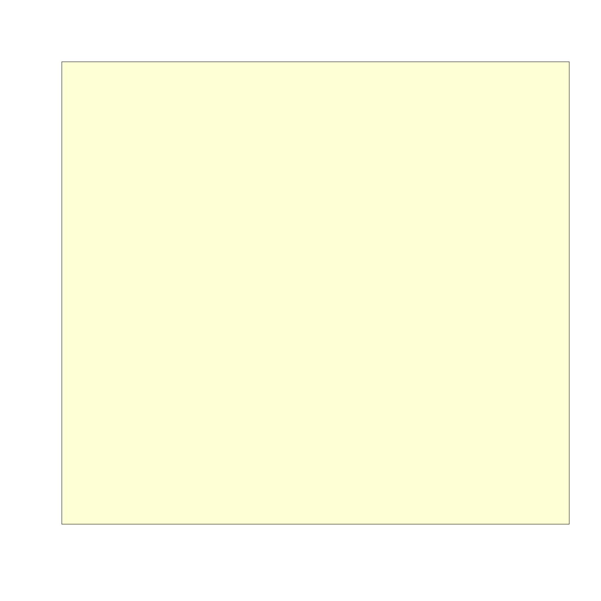

Draw colored box indicating the active R plot space
usrBox(fill = "#FFFF9966", label = NULL, parUsr = par("usr"), debug = FALSE, add = FALSE, ...)
| fill | character R color used to fill the background of the plot |
|---|---|
| label | character text optionally used to label the center of the plot space. |
| parUsr | numeric vector length 4, indicating the R plot space,
consistent with |
| debug | logical whether to print the parUsr value being used. |
This function simply draws a box indicating the active plot space, and by default it shades the box light yellow with transparency. It can be useful to indicate the active plot area while allowing pre-drawn plot elements to be shown, or can be useful precursor to provide a colored background for the plot.
The plot space is defined using par("usr") and therefore requires
an active R device is already opened.
Other jam plot functions: adjustAxisLabelMargins,
decideMfrow, getPlotAspect,
imageByColors, imageDefault,
minorLogTicksAxis, nullPlot,
plotPolygonDensity,
plotSmoothScatter,
shadowText, showColors,
smoothScatterJam, sqrtAxis
usrBox();